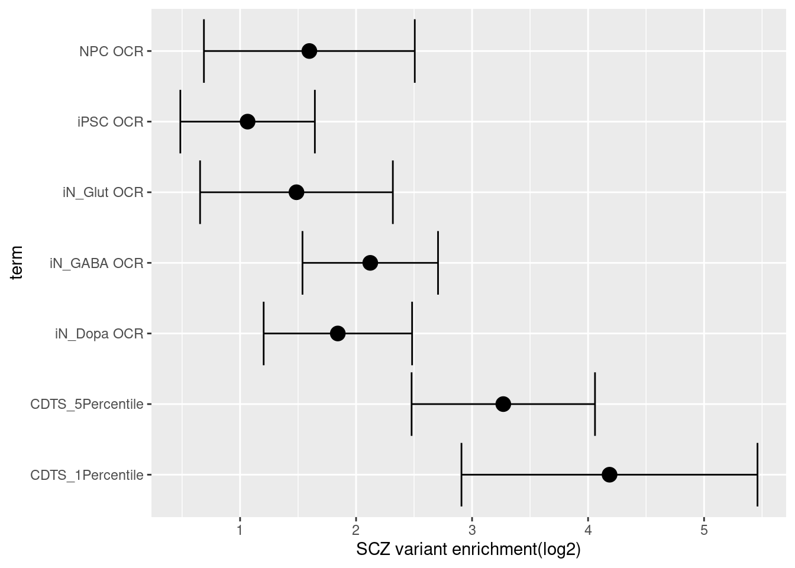
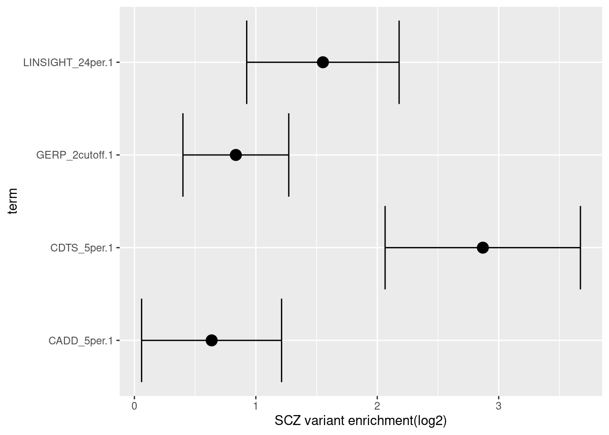

results
Last updated: 2021-04-28
Checks: 7 0
Knit directory: funcFinemapping/
This reproducible R Markdown analysis was created with workflowr (version 1.6.2). The Checks tab describes the reproducibility checks that were applied when the results were created. The Past versions tab lists the development history.
Great! Since the R Markdown file has been committed to the Git repository, you know the exact version of the code that produced these results.
Great job! The global environment was empty. Objects defined in the global environment can affect the analysis in your R Markdown file in unknown ways. For reproduciblity it’s best to always run the code in an empty environment.
The command set.seed(20210404) was run prior to running the code in the R Markdown file. Setting a seed ensures that any results that rely on randomness, e.g. subsampling or permutations, are reproducible.
Great job! Recording the operating system, R version, and package versions is critical for reproducibility.
Nice! There were no cached chunks for this analysis, so you can be confident that you successfully produced the results during this run.
Great job! Using relative paths to the files within your workflowr project makes it easier to run your code on other machines.
Great! You are using Git for version control. Tracking code development and connecting the code version to the results is critical for reproducibility.
The results in this page were generated with repository version 2a16e42. See the Past versions tab to see a history of the changes made to the R Markdown and HTML files.
Note that you need to be careful to ensure that all relevant files for the analysis have been committed to Git prior to generating the results (you can use wflow_publish or wflow_git_commit). workflowr only checks the R Markdown file, but you know if there are other scripts or data files that it depends on. Below is the status of the Git repository when the results were generated:
Ignored files:
Ignored: analysis/results.nb.html
Untracked files:
Untracked: output/constrained_and_OPC.txt
Untracked: output/prop_constrained_variants_with_OCR.txt
Unstaged changes:
Modified: analysis/biology_bkg.Rmd
Modified: analysis/method_bkg.Rmd
Note that any generated files, e.g. HTML, png, CSS, etc., are not included in this status report because it is ok for generated content to have uncommitted changes.
These are the previous versions of the repository in which changes were made to the R Markdown (analysis/results.Rmd) and HTML (docs/results.html) files. If you’ve configured a remote Git repository (see ?wflow_git_remote), click on the hyperlinks in the table below to view the files as they were in that past version.
| File | Version | Author | Date | Message |
|---|---|---|---|---|
| Rmd | 2a16e42 | Jing Gu | 2021-04-28 | compare CDTS with other annotations |
| html | 621b19b | Jing Gu | 2021-04-22 | Build site. |
| Rmd | 16ea9f9 | Jing Gu | 2021-04-22 | compare annotations |
| html | bbfe1d4 | Jing Gu | 2021-04-22 | Build site. |
| Rmd | 4dd58d7 | Jing Gu | 2021-04-22 | compare annotations |
| html | 540e287 | Jing Gu | 2021-04-21 | Build site. |
| html | e597d4e | Jing Gu | 2021-04-21 | Build site. |
| Rmd | b93bab1 | Jing Gu | 2021-04-21 | compare with other conservation annotations |
| html | 491ca5c | Jing Gu | 2021-04-14 | Build site. |
| Rmd | 1ed77cb | Jing Gu | 2021-04-14 | characterize annotations |
| html | 1ed77cb | Jing Gu | 2021-04-14 | characterize annotations |
| html | ba251cb | Jing Gu | 2021-04-14 | Build site. |
| Rmd | 76883f1 | Jing Gu | 2021-04-14 | characterize annotations |
| html | 76883f1 | Jing Gu | 2021-04-14 | characterize annotations |
| html | 1a76b29 | Jing Gu | 2021-04-06 | Build site. |
| Rmd | ae12e8a | Jing Gu | 2021-04-06 | evaluate sequence constraints |
| html | 752cb39 | Jing Gu | 2021-04-05 | Build site. |
| html | f1c5950 | Jing Gu | 2021-04-05 | Build site. |
| html | d16a5e0 | Jing Gu | 2021-04-05 | Build site. |
| Rmd | 6f7214b | Jing Gu | 2021-04-05 | edit index page |
Attaching package: 'dplyr'The following objects are masked from 'package:data.table':
between, first, lastThe following objects are masked from 'package:stats':
filter, lagThe following objects are masked from 'package:base':
intersect, setdiff, setequal, unionFine-mapping with functional annotations as priors has shown improved results in identifying causal variants. This project is to evaluate the utility of novel annotation features and adopt ones that can improve fine mapping results.
Evaluation
GWAS summary statistics
Schizopherenia - Pardinas et al., 2018
- 40675 cases and 64643 controls
- CLOZUK sample + PGC sample (independent)
- 179 independent GWAS significant SNPs mapped to 145 independent loci
- SNPs were imputed using a combination of the 1KGPp3 and UK 10K datasets.
- SNPs were filtered by NFO > 0.6 and MAF > 0.01
- LD-score regression analysis: An LD reference was generated from 1KGPp3 after restricting this dataset to strictly unrelated individuals and retaining only markers with MAF > 0.01.
GWAS QC Procedures
- Current procedures was based on Alan’s finemappeR pipeline
- Criteria for filtering gwas SNPs
- Remove all non-biallelic SNPs
- Remove all SNPs with strand-ambiguous alleles (SNPs with A/T, C/G alleles)
- Removed SNPs without rs IDs, duplicated rs IDs or base pair position.
- Removed SNPs not in the reference panels
- Removed SNPs whose base pair positions or alleles doesn’t match the reference panels
- Removed all SNPs on chromosome X, Y, and MT
After filtering, there are around 6 million variants remained.

Plots for GWAS summary statistics
Features
- Sequence constraints:
- context-dependent tolerance scores(CDTS) in percentiles
- A score was computed for each 10bp bin in the genome.
- The lower the score is, the more intolerant to variation is the bin.
Procedures
- GWAS summary statistics was pre-processed to remove sex chromosomes, indels, ambiguous and duplicated SNPs.
- Currently, genotypes from 1kg European samples are used to compute LD between SNPs.
- SNPs in GWAS summary statistics were matched with the reference panel and assigned to in total 1687 independent LD blocks.
- Run TORUS to perform genome-wide enrichment analyses.
Results
All variants were catogrized into whether or not they occur in genomic bins with CDTS up to 1 percentile or 5 percentile.
Examine the CDTS feature
check the proportion of variants with high sequencing constraints that also have functional annotations in brain
| iN_Dopa | iN_GABA | iN_Glut | iPSC | NPC | Any_OCR | |
|---|---|---|---|---|---|---|
| CDTS_1% | 53.7% | 62.6% | 53.2% | 70.8% | 51.9% | 76.4% |
| CDTS_5% | 24.4% | 27.8% | 21.6% | 33.9% | 20.6% | 40.4% |
Check the percent of constrained sequences that overlaps with open chromatin regions from neurons
- Overlaps between two sets of genomic features were identified using
bedtools intersect. The constrained sequences were counted to be overlapped when at least 10%(>=1 bp) intersect with peaks called from ATAC-Seq profiles.
| iN_Dopa | iN_GABA | iN_Glut | iPSC | NPC | |
|---|---|---|---|---|---|
| CDTS_1% | 46.9% | 55.6% | 45.4% | 62.2% | 44.2% |
| CDTS_5% | 18% | 21.3% | 17.4% | 23.8% | 16.9% |
| enhancer | exon | intron | promoter | UTR3 | UTR5 | |
|---|---|---|---|---|---|---|
| CDTS_1% | 7.8 | 30.2 | 47.2 | 58.7 | 10.4 | 29.2 |
| CDTS_5% | 5.1 | 13.9 | 55.1 | 21.9 | 10.3 | 21.0 |
Summary: The overlap of CDTS with open chromain regions in neurons much higher than immure cells. In our analysis, the overlap with enhancers is low. However, CDTS shows high overlapping with exons, introns and promoters.
Enrichment analysis for sequence constraints  The enrichment estimate has a confience level above zero for CDTS and positive controls. This shows SNPs associated with SCZ are on average ~ 9 fold enriched in genomic bins with up to 5 percentile of CDTS.
Compare with other conservation annotations
- LINSIGHT
- predict how noncoding nucleotide sites are likely to have deleterious fitness consequences and hence be phenotypically important
- genome-wide average of LINSIGHT scores was ~0.07 (range: 0.03-0.99)
- Estimated mean LINSIGHT score for conserved TFBSs was 0.24->used as cutoff for whether the nucelotide site is conserved
- 2.5% of GWAS SNPs are above LINSIGHT threshold.
- CADD - Combined Annotation–Dependent Depletion,
- provides metrics of deleteriousness
- scaled PHRED score [-10log10(P)]
- 5 percent chosen as a cutoff, which represents top 5% of all possible reference genome SNVs
- GERP - Genomic Evolutionary Rate Profiling
- produce position-specific estimates of evolutionary constraint
- constraint intensity quantified as a “rejection score” range from -12.3 to 6.17
- UCSC suggests a RS score threshold of 2 which provides high sensitivity and strongly enriched for true constraint sites
Comparing the top k-th percentile of CDTS bins vs top k-th percentile scores of other annotations
- CDTS vs CADD (genome-wide top 5%)
For the top 5% of CDTS bins, 15.4% of the bases have CADD scores above 5%. For the SNPs with top 5% CADD scores, 10.8% of them fall into top 5% CDTS bins. - CDTS vs LINSIGHT (per-chromosome top 10%)
For the top 10% of CDTS bins, 1% of the bases have LINSIGHT scores above 10%. For the SNPs with top 10% CADD scores, 12% of them fall into top 10% CDTS bins. - CDTS vs GERP (per-chromosome top 10%)
For the top 10% of CDTS bins, 8.7% of the bases have GERP scores above 10%. For the SNPs with top 10% CADD scores, 11.7% of them fall into top 10% CDTS bins.
Summary:
- Overall, there is a maximum of 15.4% overlapping between the bases within the top CDTS bins and those ranked among top annotation scores.
- Only 1% of bases from top 10% CDTS bins have LINSIGHT scores above 10%, probably due to many missing predictions in LINSIGHT.
[1] "5 million (68%) SCZ GWAS SNPs have conservation scores across all annotations."| CADD | LINSIGHT | GERP | CDTS | |
|---|---|---|---|---|
| CADD | 1.000 | 0.211 | 0.178 | -0.026 |
| LINSIGHT | 0.211 | 1.000 | 0.083 | -0.070 |
| GERP | 0.178 | 0.083 | 1.000 | -0.005 |
| CDTS | -0.026 | -0.070 | -0.005 | 1.000 |
The correlation table shows the pair-wise correlations between ranks for the conservation scores on GWAS SNPs across all the annotations. CDTS seems to be uncorrelated to other conservation scores. CADD has a moderate correlation separately with LINSIGHT and GERP. A low correlation observed between GERP and LINSIGHT.
joint TORUS enrichment analysis over conservation-related annotations  With other conservation annotations as predictors in the model, we can see CDTS within top 5 percentile still shows around 8 fold enrichment.
sessionInfo()R version 4.0.4 (2021-02-15)
Platform: x86_64-pc-linux-gnu (64-bit)
Running under: Scientific Linux 7.4 (Nitrogen)
Matrix products: default
BLAS/LAPACK: /software/openblas-0.3.13-el7-x86_64/lib/libopenblas_haswellp-r0.3.13.so
locale:
[1] LC_CTYPE=en_US.UTF-8 LC_NUMERIC=C
[3] LC_TIME=en_US.UTF-8 LC_COLLATE=en_US.UTF-8
[5] LC_MONETARY=en_US.UTF-8 LC_MESSAGES=en_US.UTF-8
[7] LC_PAPER=en_US.UTF-8 LC_NAME=C
[9] LC_ADDRESS=C LC_TELEPHONE=C
[11] LC_MEASUREMENT=en_US.UTF-8 LC_IDENTIFICATION=C
attached base packages:
[1] stats graphics grDevices utils datasets methods base
other attached packages:
[1] ggplot2_3.3.3 knitr_1.31 dplyr_1.0.4 data.table_1.14.0
[5] workflowr_1.6.2
loaded via a namespace (and not attached):
[1] Rcpp_1.0.6 highr_0.8 pillar_1.5.0 compiler_4.0.4
[5] bslib_0.2.4 later_1.1.0.1 jquerylib_0.1.3 git2r_0.28.0
[9] tools_4.0.4 digest_0.6.27 gtable_0.3.0 jsonlite_1.7.2
[13] evaluate_0.14 lifecycle_1.0.0 tibble_3.0.6 pkgconfig_2.0.3
[17] rlang_0.4.10 DBI_1.1.1 yaml_2.2.1 xfun_0.21
[21] withr_2.4.1 stringr_1.4.0 generics_0.1.0 fs_1.5.0
[25] vctrs_0.3.6 sass_0.3.1 grid_4.0.4 rprojroot_2.0.2
[29] tidyselect_1.1.0 glue_1.4.2 R6_2.5.0 fansi_0.4.2
[33] rmarkdown_2.7 farver_2.0.3 purrr_0.3.4 magrittr_2.0.1
[37] whisker_0.4 scales_1.1.1 promises_1.2.0.1 ellipsis_0.3.1
[41] htmltools_0.5.1.1 assertthat_0.2.1 colorspace_2.0-0 httpuv_1.5.5
[45] labeling_0.4.2 utf8_1.1.4 stringi_1.5.3 munsell_0.5.0
[49] crayon_1.4.1